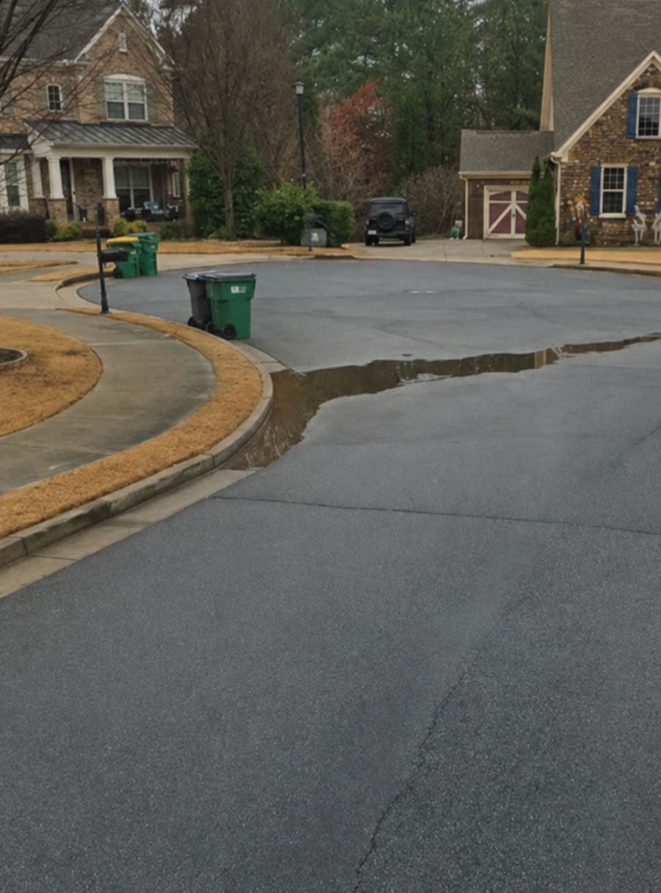
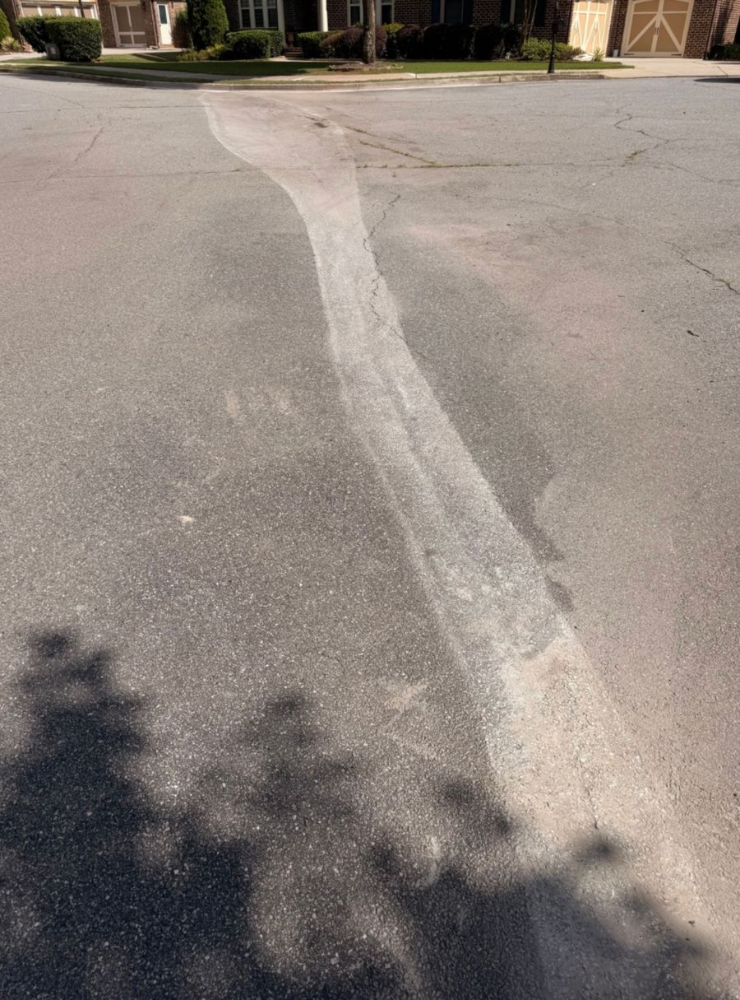
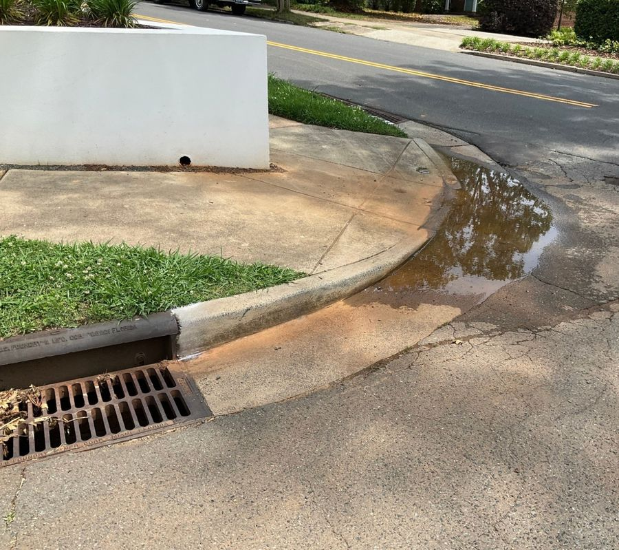

Live Webinar – Wednesday, October 14, 2pm ET
One of the most attended sessions at PWX 2026 is back, live and online. See how municipalities are eliminating roadway and accessible-route ponding at 65–85% less than traditional replacement, without engineering redesign, long construction timelines, or major traffic control.


Across a cul-de-sac: ponding eliminated in hours.
What you'll walk away with in under an hour.
Discover how to cut ponding repair costs by 65–85% and traffic control costs by 50–70%.
Understand why programmatic deployment, not one-off repairs, is the bigger opportunity.
Learn how to restore accessible routes and keep standing water off ADA ramps and landings.
The same session that packed the room at PWX Houston, in a tight 55 minutes you can watch without leaving your desk.

Ponding on a pedestrian access route, one of the repair types covered in the session.From ponding to positive drainage. Drag the slider to compare before and after.
Across a Cul-de-sac
Managing Partner, Precision Flowline
Aaron presented the Precision Flowline methodology for mitigating roadway and accessible-route ponding to a packed room at PWX 2026 in Houston. In this encore, he'll walk through the same field results and case studies, then take your questions live.
Our city engineers inspected the results and said it was some of the best work they'd seen from a private contractor.
City EngineerOur traditional cost for this work is significantly greater than what you are proposing. This process will eliminate very costly sidewalk and street repairs.
Assistant Public Works DirectorThis process will eliminate many of the public complaints we get now after street re-paving projects.
DOT Deputy Director of Street MaintenanceDon't wait for ponding complaints. Learn how to find drainage problems early, confirm which ones can be fixed, and correct them before they turn into expensive infrastructure failures.
Provide your information in the following form and we will send you reminders with the official Zoom link for the webinar! Fields marked with an asterisk (*) are required.